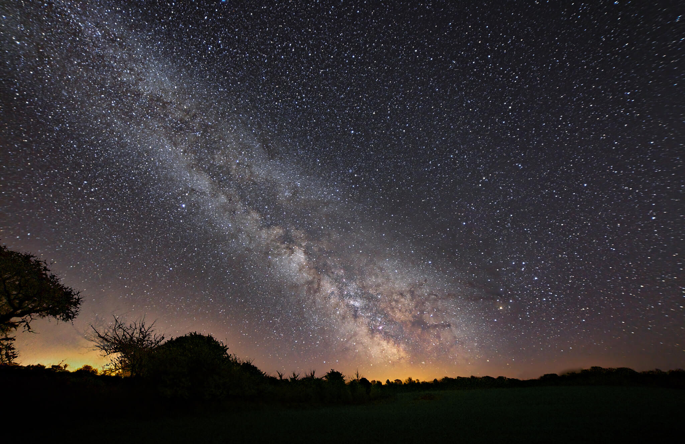
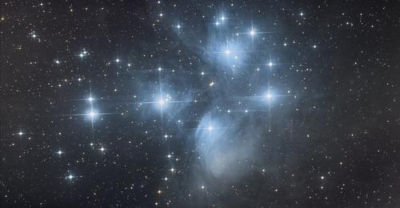
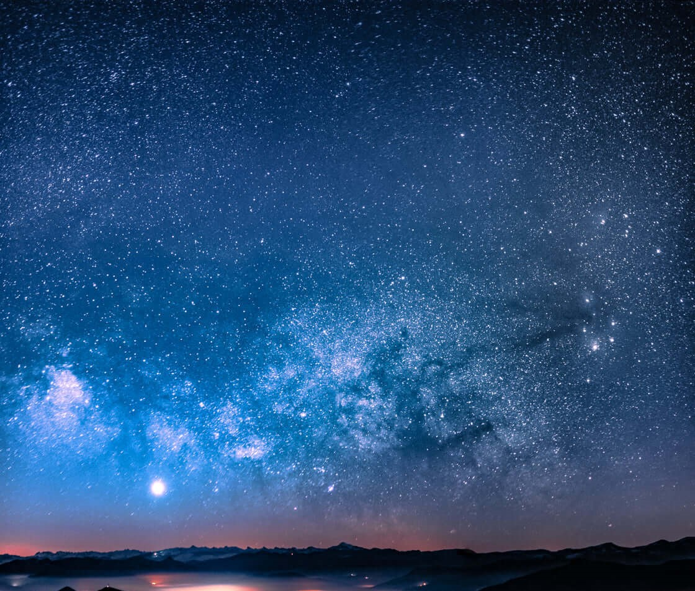
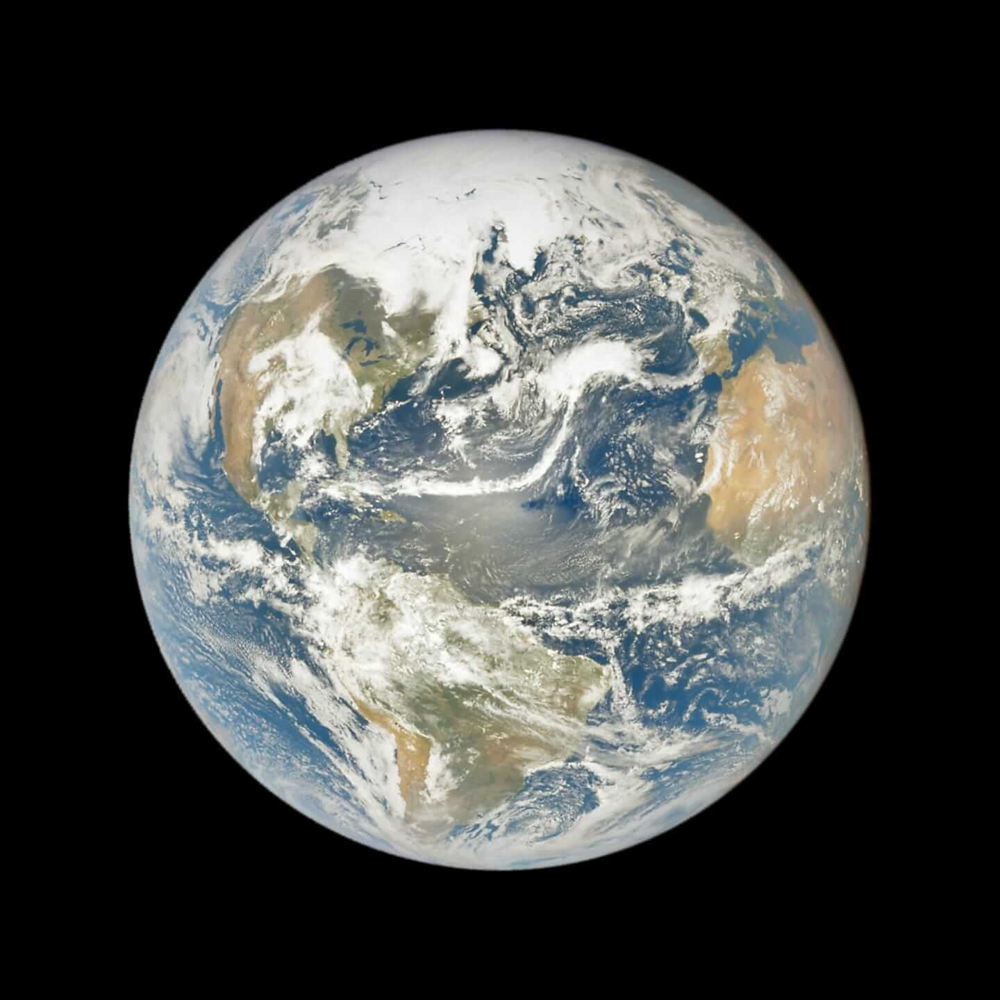
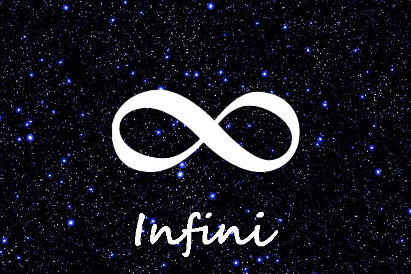

Nuits des étoiles d'hiver
Le ciel d’hiver aussi a droit à ses Nuits des étoiles ! Pour commencer l'année, l’Association L'étoile filante vous propose de contempler les étoiles et constellations de la voûte céleste en pleine saison hivernale.
Du 22 au 29 janvier en compagnie des clubs et associations au travers d’une veillée aux étoiles exceptionnelles.
Le 22 janvier nous aurons deux très beaux passages de l'ISS (18h09 et 19h46) au-dessus de la France, avec un lever de l'ISS juste à côté de Jupiter pour son 1er passage.
Le 26 janvier à 6h30, il y aura une très belle occultation de l'étoile double Zubenelgenubi (visible à l'oeil nu, aux jumelles et au télescope).
Le 29 janvier la Lune est en conjonction avec Mars à l’aube à 5°. Vénus est à 10° sur la gauche de Mars.
Nuits des étoiles
La nuits des étoiles se déroulent les 6, 7 et 8 août 2022 !
En effet, grâce en l’absence de la Lune le week-end du 8 août et dès la nuit tombée les constellations du triangle d’été – la Lyre, le Cygne et l’Aigle permettent de s’orienter facilement. Suivre le poudroiement de la Voie Lactée du nord au sud, depuis Cassiopée et Persée, jusqu’au Scorpion et au Sagittaire, en direction du centre galactique. Plus que jamais les étoiles filantes signent l’esprit des Nuits des étoiles. Le spectacle est gratuit, il est accessible à tous et ne nécessite aucune connaissance préalable. Seule la curiosité en est la clé d’accès. Mais mieux encore, le partage des émotions peut s’accompagner d’un récit où se transmettent les connaissances. Lorsque l’œil est à la lunette ou au télescope, la découverte est guidée par un observateur instruit.
Rencontres photographiques
Les amoureux de la photographie du ciel et des paysages nocturnes se retrouveront du 21 au 25 septembre 2022.
Premier rassemblement du genre, organisé par l’Association L'étoile filante. Les photographes d’orages, de paysages nocturnes, d’étoiles, d’objets célestes ou les néophytes qui souhaitent s'y mettre se retrouvent durant cinq jours. L'occasion de partager leurs clichés, échanger leurs techniques, tester du matériel et pratiquer ensemble dans une ambiance d’été indien.
Rencontres du ciel et de l'espace
Les Rencontres du Ciel et de l’Espace s’imposent comme le rendez-vous incontournable des passionnés et des curieux du ciel. Avec ses 2500 visiteurs journaliers, elles sont indubitablement le plus important point de rendez-vous de la communauté astronomique, professionnelle et amateur, en Europe.
Réservez votre week-end du 11 novembre 2022 pour un événement d’une rare intensité. Celui-ci propose 150 conférences, table-rondes, forums ou ateliers afin de satisfaire la curiosité d’un large public. Découvrez la plus grande galerie marchande consacrée à l'astronomie valorisé par des expositions, des présentations ainsi que la contribution des acteurs scientifiques et industriels dans le développement de nos connaissances.
Festival des 2 infinis
Du 11 septembre au 21 novembre se déroulera la 11e édition de ce désormais célèbre rendez-vous francilien, devenu un incontournable pour tous les passionnés d'astronomie.
Deux soirées d'observation "Montsouris sous les étoiles" le samedi 11 septembre et le samedi 9 octobre organisée dans le cadre du Jour de la Nuit.
Une après-midi d'observation du Soleil, d'animation et de conférences, le 11 septembre.
Des randonnées de découvertre du patrimoine astronomique du 2 au 24 octobre les week-ends.